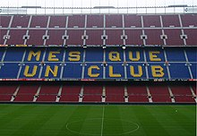

El derbi barcelonés, también conocido como derbi catalán, es el nombre que reciben los partidos de fútbol que enfrentan entre sí, a los dos equipos más representativos de la ciudad de Barcelona, esto es, el F. C. Barcelona y el R. C. D. Espanyol.
La rivalidad deportiva de ambos clubes se manifiesta mediante los numerosos enfrentamientos que a lo largo de la historia han disputado ambos clubes, tanto en partidos oficiales correspondientes a la Liga española de fútbol, la Copa del Rey (destacando la final de 1957), la Supercopa de España y la Copa de Ferias.
Como dato a resaltar, el equipo perico es al cuál el conjunto azulgrana ha ganado más veces. Lo orígenes del fútbol en Cataluña se remontan a finales del siglo XIX, gracias a la colonia inglesa residente en esta comunidad, y también gracias a la influencia de estudiantes catalanes que retornaban del extranjero.
Así, el 29 de noviembre de 1899, un empresario suizo afincado en Barcelona, llamado Hans Gamper, fundaba el FC Barcelona; Sin embargo, menos de un año después, concretamente el 13 de octubre de 1900, también se constituía en Barcelona, otra sociedad deportiva conocida en sus inicios como Sociedad Española de Foot-ball
(embrionaria del actual RCD Espanyol de Barcelona), que fue fundada por Ángel Rodríguez Ruiz junto a varios compañeros de la Universidad de Barcelona.
